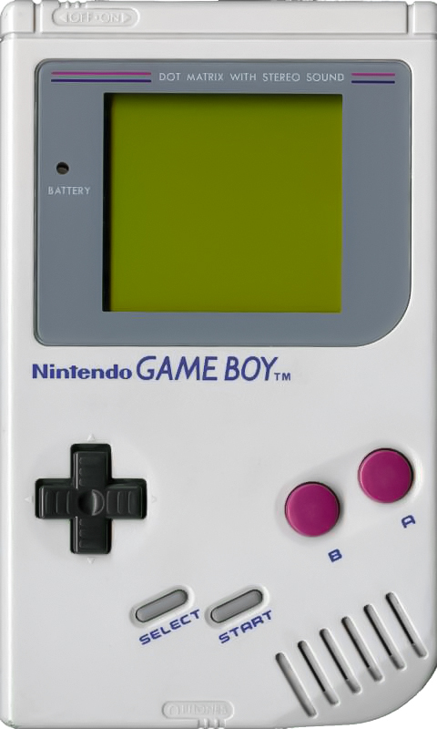

Consolas más vendidas
| Imagen | Nombre de la consola | Nombre del diseñador | Año de lanzamiento | Desarrollador (Empresa) | Precio | Juegos famosos de la consola |
|---|---|---|---|---|---|---|
| PlayStation 2 | Ken Kutaragi | 2000 | Sony Computer Entertainment | La versión sin juegos costaba 2,299 pesos mexicanos | Resident Evil 4, Grand Theft Auto Vice City, Gran Turismo, Jack and Daxter 2, Devil May Cry, entre otros | |
 |
Nintendo DS | Shigeru Miyamoto | 2004 | Nintendo | Costaba cerca de 150 Euros en pesos mexicanos serían 2,729 | Mario & Luigi: Viaje al Centro de Bowser, Nintendogs, Castlevania: Dawn of Sorrow, entre otros |
|  | Game Boy | Gunpei Yokoi | 1989 | Nintendo | Costaba aproximadamente 113,59 Euros lo que son 2,066 en pesos mexicanos | Pokémon, Tetris, Super Mario, Donkey Kong, Kirby |
 |
Wii | Shigeru Miyamoto | 2006 | Nintendo | 3,999 pesos desde los 5,599 en México | Super Mario Galaxy, Twilight Princess, Super Smash Bros, entre otros |
 |
Xbox | Seamus Blackley | 2001 | Microsoft | Su precio es de $499 dólares estadounidenses; En México su precio es de $8499.00 MXN | Legacy of Kain: Defiance, Dead to Rights II, Red Faction 2, entre otros |
Este solo fue un listado de 5 consolas pero hay una diversidad extensa de distintas marcas, precios y tamaños, estas fueron algunas de las más famosas.